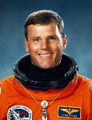

Lyndon B. Johnson Space Center
Houston, Texas 77058
|
National Aeronautics and Space Administration Lyndon B. Johnson Space Center Houston, Texas 77058 |
 |
Biographical Data |
||
Stephen S. Oswald (Mr.)
NASA Astronaut
PERSONAL DATA: Born June 30, 1951, in Seattle, Washington, but considers Bellingham, Washington, to be his hometown. Married to the former Diane K. Kalklosch of Fullerton, California. They have three children, Monique, Janna, and Scott.
EDUCATION: Graduated from Bellingham High School, Bellingham, Washington, in 1969; received a bachelor of science degree in aerospace engineering from the U.S. Naval Academy in 1973.
ORGANIZATIONS: Member of the Society of Experimental Test Pilots, the Association of Space Explorers, the Naval Reserve Association, the Distinguished Eagle Scout Association, and the American Institute of Aeronautics and Astronautics.
AWARDS: Recipient of the Legion of Merit, the Distinguished Flying Cross, the Meritorious Service Medal, the Navy Commendation Medal (2), the NASA Outstanding Leadership Medal, the NASA Exceptional Service Medal (2), the NASA Space Flight Medal (3), and various service awards.
EXPERIENCE: Oswald graduated from the U.S. Naval Academy in 1973, and was designated a naval aviator in September 1974. Following training in the A-7 aircraft, he flew aboard the USS Midway from 1975 through 1977. In 1978, Oswald attended the U.S. Naval Test Pilot School at Patuxent River, Maryland. Upon graduation, he remained at the Naval Air Test Center conducting flying qualities, performance, and propulsion flight tests on the A-7 and F/A-18 aircraft through 1981. Following tours as an F/A-18 flight instructor and as a catapult officer aboard the USS Coral Sea, Oswald resigned from active Navy duty and joined Westinghouse Electric Corporation as a civilian test pilot. Oswald is a captain in the Naval Reserve, currently assigned to the Office of Naval Research. He has logged 7,000+ flight hours in over 40 different aircraft.
NASA EXPERIENCE: Oswald joined NASA in November 1984 as an aerospace engineer and instructor pilot and was selected as an astronaut candidate in June 1985. His technical assignments within the Astronaut Office have included: flight crew representative to Kennedy Space Center; flight software testing with the Shuttle Avionics Integration Laboratory; crew representative to the Marshall Space Flight Center on solid rocket booster redesign; and spacecraft communicator (CAPCOM) in the Mission Control Center during Space Shuttle missions. He was also the Chief of the Operations Development Branch within the Astronaut Office and served as Assistant Director of Engineering at Johnson Space Center.
Oswald has piloted two missions aboard the Space Shuttle Discovery: STS-42, the International Microgravity Laboratory-1 mission, flown in January 1992, and STS-56, the second Atmospheric Laboratory for Applications and Science (ATLAS-2) mission, flown in April 1993. Oswald commanded STS-67, the second flight of the Astro observatory (Astro II), which flew on the Space Shuttle Endeavour in March, 1995. This mission established a mission duration record for Space Shuttle at 17 days. With the completion of his third space flight, Oswald has logged over 33 days in space.
After STS-67, Oswald was assigned to NASA Headquarters in Washington, DC as Deputy Associate Administrator for Space Operations. In this capacity, he was responsible for Space Shuttle, Expendable Launch Vehicles, and Space Communications for the Agency. After nearly two and a half years in Washington, Oswald returned to the Astronaut Office in July 1998.
Oswald retired from NASA in January 2000.
FEBRUARY 2000
{kind=link}